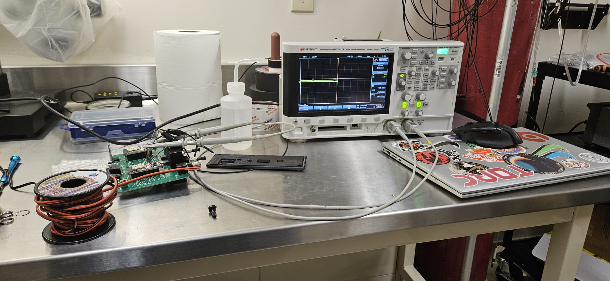

PROJECT AT A GLANCE
At a Glance
01 — PROJECT OVERVIEW
A Modular Detector for PET Synthesis
I developed a modular scintillation detector for monitoring radioactivity during the automated synthesis of positron emission tomography (PET) radiopharmaceuticals.
Each detector module handles two SiPM channels and contains the signal-processing, power, microcontroller, and SiPM interface circuitry required for operation. Two modules were built for the final system, providing four monitored channels.
The modular architecture was designed to make the detector scalable and maintainable. Modules can be stacked vertically to fit within the user's workspace, while power is passed between modules so that only the first module needs to be connected to the external 5 V supply.
02 — SYSTEM ARCHITECTURE
Modular Signal Acquisition
Each module combines two detector channels with local signal processing, power management, and an ESP32-based data acquisition system. Multiple modules can be connected through the module-to-module power interface.
SiPM
Two detector channels per module
Amplification
30 V/V analog gain
Peak Detection
Analog peak capture and hold
ESP32
ADC acquisition and control

03 — SIGNAL PROCESSING
From SiPM Pulse to Measurable Signal
The SiPM produces short electrical pulses when scintillation events are detected. The signal-processing chain was designed to amplify these pulses and convert them into a signal that could be reliably sampled by the ESP32 ADC.
The amplification stage was designed for a gain of approximately 30 V/V. The amplified signal is then processed by a peak detector built around high-speed operational amplifiers, a BSS138 MOSFET, and a Schottky diode.

Peak Detection
The peak detector charges a hold capacitor when a signal peak is detected. A BSS138 MOSFET is used to rapidly discharge the capacitor when commanded, allowing the circuit to capture subsequent events without relying solely on the passive RC discharge time.
The peak was held for approximately 200 µs, with the peak-hold and discharge behavior controlled by the firmware.

04 — CIRCUIT SIMULATION
Simulation Before Prototyping
The signal-processing circuitry was modeled in LTSpice before PCB implementation. Representative SiPM pulses were generated using LTSpice's exponential source functionality to evaluate the response of the signal chain across a range of input amplitudes.
Input pulses of approximately 6 mV, 32 mV, and 100 mV were modeled to evaluate the dynamic range of the amplification and peak-detection circuitry.
Raw SiPM Signals
Simulated detector pulses spanning approximately 6 mV to 100 mV.
30 V/V Amplification
Evaluated the amplified response across different input pulse amplitudes.
Peak Detection
Verified that the amplified pulses could be captured and held for ADC acquisition.
LTSpice Modeling
Used circuit simulation to validate the signal chain before hardware implementation.


05 — POWER ARCHITECTURE
Stackable Power Distribution
Each module is powered from a regulated 5 V DC external supply. The module distributes this supply to the low-voltage circuitry and generates the approximately 29.5 V bias required by the SiPM.
A module-to-module power interface allows multiple detector modules to be stacked together. The first module connects to the external power supply and passes power to subsequent modules through the interconnect, reducing the number of external power connections required by the system.
Each module also includes its own power switch, allowing individual modules to be enabled or disabled while remaining part of the same power chain.

5 V Input
External regulated DC supply provides the main module input power.
SiPM Bias
DC-DC boost circuitry generates approximately 29.5 V for the SiPM.
Power Pass-Through
Modules pass power to adjacent modules through the stackable interconnect.
Independent Switching
Each module can be powered on or off independently within the connected system.
06 — PCB DESIGN & IMPLEMENTATION
From Circuit to Hardware
The detector electronics were implemented across multiple custom PCBs. The main PCB integrates the signal-processing circuitry, power circuitry, microcontroller, SiPM interface, and hardware debugging interfaces.
The PCB layout was developed in Altium Designer with the objective of reducing the overall module size while maintaining access to important signals and interfaces.


Hardware Debugging & Serviceability
The main PCB includes dedicated test points and BNC connections that allow the SiPM signal to be probed at different stages of the analog signal chain. An OLED provides module information, while a reset button and accessible interfaces simplify hardware bring-up and troubleshooting.
The ESP32 and SiPM interface were connected through headers so that these components could be replaced without requiring a new main PCB.
07 — PCB ASSEMBLY
Manufacturing & Assembly
The PCBs were assembled using a combination of reflow soldering, stencil-applied solder paste, hand soldering, and hot-air rework.
Surface-mount components were assembled using a reflow process, while through-hole components and selected interfaces were hand soldered. Hot-air rework was also used to correct SiPM soldering issues during bring-up.


08 — EMBEDDED SYSTEM
Data Acquisition & Control
An ESP32 is used to acquire the processed detector signal through its ADC and control the peak-detection circuitry. Firmware manages the peak-hold and discharge behavior, allowing the analog circuit to capture short-duration SiPM pulses in a form suitable for digital acquisition.
A dedicated RXTX module provides the wireless communication interface between the detector system and the user's computer, allowing scintillation measurements to be monitored without requiring a direct wired connection to the detector modules.
ADC Acquisition
Sampled the peak-detected signal using the ESP32 ADC.
Peak Control
Firmware controls the peak-hold and capacitor discharge behavior.
Wireless Interface
RXTX hardware provides wireless communication with the computer-based capture system.
Modular System
Multiple detector modules can be combined to increase the number of monitored channels.
09 — TESTING & VALIDATION
Hardware Bring-Up & Signal Validation
The analog signal-processing stages were evaluated independently before integration into the complete detector. A function generator was used to provide representative input signals while an oscilloscope was used to observe the response through the amplification and peak-detection stages.
Dedicated test points and BNC connections on the main PCB allowed the signal to be probed at multiple stages of the processing chain. The completed detector was subsequently tested with the SiPM to capture actual detector pulses.


10 — ENGINEERING TAKEAWAYS
Design Tradeoffs & Future Improvements
The project provided experience integrating analog signal processing, high-voltage sensor biasing, embedded acquisition, PCB design, and mechanical/system-level modularity into a single detector platform.
The prototype also highlighted areas that could be improved in a future revision. Additional analog filtering could be introduced to improve noise rejection and signal conditioning.
The grounding and power-distribution architecture could also be refined further. The prototype used a common ground architecture, providing an opportunity for a future revision to further separate sensitive analog circuitry from digital and power-related noise sources.
The modular architecture, replaceable interfaces, and accessible test points were designed to simplify troubleshooting and future expansion of the detector.
11 — TECHNICAL HIGHLIGHTS